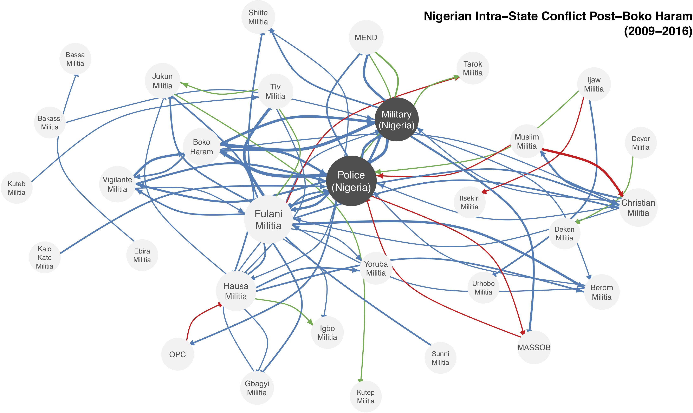

Network Analysis: Getting Started with the super basics
A set of nodes and relation(s) defined on them

Synonyms:
Synonyms:
Ties can have characteristics:
Early Puzzles
| ## Early study of network analysis |
| Early Puzzles: Individuals inside social groups |
| - Example: In 1932 there was a pandemic of runaways at Brooklyn public and private schools: within two weeks 14 girls ran away, which was 30 times more than the average number - Moreno’s finding: position in network predicted whether the girl would run away |
 |
Kathleen Carley, Another Early Puzzle (1980-90s): Group Stability and Organization
Kathleen Carley, Another Early Puzzle (1980-90s): Group Stability and Organization
| ## Early study of network analysis Kathleen Carley, Another Early Puzzle (1980-90s): Group Stability and Organization |
| - Example: What makes a group stable? Application: founders/leaders of businesses - Shared knowledge between actors matters as much, if not more, than context for group stability |
Kathleen Carley, Another Early Puzzle (1980-90s): Group Stability and Organization
How can we capture these relationships? The Sociomatrix. example: PONIES
Ranks and Relationships in Highland Ponies and Highland Cows by Brock et. al 1976
| ## Sociomatrix: Pony threats Directed, targeted behavior |
 |
Undirected, mutual behavior
Our class has an R package that will contain all the datasets.
To load our class package (you have to do this each time you need to access the data):
library(devtools)
install_github("ochyzh/networkdata")
library(networkdata)data(highlandPonies)
ponies<-as.matrix(highlandPonies[1:17, 2:18])Create a graph object:
library(igraph)
pGraph <- graph_from_adjacency_matrix(ponies, weighted=TRUE, mode="undirected",
diag=FALSE)| ## Plot using the igraph package: |
r V(pGraph)$color <- ifelse(V(pGraph)$name %in% c("WT", "WH", "WS"), "azure1", "turquoise") ponyPlot<- plot(pGraph, edge.arrow.size=.2, edge.color="black", vertex.frame.color="black", vertex.label=V(pGraph)$names, vertex.label.color="black", layout=layout_with_fr, edge.width=E(pGraph)$weight/5, edge.curved=.08) |

| ## Other Examples of Neworks |
| - Survey data (Mexico violence) - Text (co-occurrence matrices) - Event data (conflict between actors, shared behavior between actors) - Membership data (subcommittees) |
class: inverse, middle, center # Collecting network data
| ## Activity 1: Build your own sociomatrix of shared experience Break-out groups interview |
| 1. Brainstorm a question you can ask each member of the group. 2. Keep the question simple yet specific enough to get variation in this small sample, i.e. “have you ever visited Texas” or “have you ever graphed a social network before?” 3. Record this observational data where in each observation (person) is a row in the data and their response (the variable you measured) is a column. 4. Now transform this data, with pen and pencil, into a sociomatrix. |
Step 1: A simple Data set
Step 2: A simple, undirected, sociomatrix

| ## Summary: data processing |
 |
Dyads
| ## Networks in Political Science Dyads |
| - Introduced by the use of dyads, largely in International Relations literature - Early work in IR focused on the behavior and policies of individual states (for example, Morgenthau 1948). |
Dyads
| ## Networks in Political Science Dyads |
| - Introduced by the use of dyads, largely in International Relations literature - Early work in IR focused on the behavior and policies of individual states (for example, Morgenthau 1948). - Analysis of pairs of countries (trade, war, democracy, political ties). + Example: * US-Iraq 2003: War * US-Iran 2003: No War * Iran-Iraq 2003: No War |
Dyads
| ## This image again (or why logits are not who you think they are)
|
|---|
| ## Networks in Political Science Today: Systems (Dyads –> Networks) |
| - Researchers recognize that dyads cannot be studied independently - Network analysis is seen in a wide variety of applications both within and beyond Political Science: + geography + spatial analysis + conflict studies + peer-networks + congressional voting |


| ## Adolescent romantic and sexual networks |
 Bearman, Moody and Stovel
Bearman, Moody and Stovel |

| ## Adolescent Social Structure by Jim Moody |
 |


class: inverse, middle, center # Processing Network Data:
| ## Dealing with Data You might begin with either a matrix or information stored separately about edges and nodes. This depends on your data collection strategy. |
| Useful terminology for working in R: |
| + Matrices: the adjacency matrix + Edges: linkages between actors or nodes + Vertices: nodes (or actors) in your system |
How do we restructure a dyadic data frame such as alliances from COW into a matrix format?
data(defAlly)
head(defAlly)## ccode1 ccode2 ij defAlly year
## 1 2 20 2_20 1 2012
## 2 2 31 2_31 0 2012
## 3 2 41 2_41 0 2012
## 4 2 42 2_42 0 2012
## 5 2 51 2_51 0 2012
## 6 2 52 2_52 0 2012| ## Your Turn (5 min) |
Can you transform defAlly into a matrix form as shown below? |
## 2 20 31 41 42 51 52 53 54 55 56 57 58 60 70 80 90 91 92 93 ## 2 NA 1 0 0 0 0 0 0 0 0 0 0 0 0 0 0 0 0 0 0 ## 20 1 NA 0 0 0 0 0 0 0 0 0 0 0 0 0 0 0 0 0 0 ## 31 0 0 NA 0 0 0 0 0 0 0 0 0 0 0 0 0 0 0 0 0 ## 41 0 0 0 NA 0 0 0 0 0 0 0 0 0 0 0 0 0 0 0 0 ## 42 0 0 0 0 NA 0 0 0 0 0 0 0 0 0 0 0 0 0 0 0 ## 51 0 0 0 0 0 NA 0 0 0 0 0 0 0 0 0 0 0 0 0 0 ## 52 0 0 0 0 0 0 NA 0 0 0 0 0 0 0 0 0 0 0 0 0 ## 53 0 0 0 0 0 0 0 NA 1 1 1 1 1 1 0 0 0 0 0 0 ## 54 0 0 0 0 0 0 0 1 NA 1 1 1 1 1 0 0 0 0 0 0 ## 55 0 0 0 0 0 0 0 1 1 NA 1 1 1 1 0 0 0 0 0 0 ## 56 0 0 0 0 0 0 0 1 1 1 NA 1 1 1 0 0 0 0 0 0 ## 57 0 0 0 0 0 0 0 1 1 1 1 NA 1 1 0 0 0 0 0 0 ## 58 0 0 0 0 0 0 0 1 1 1 1 1 NA 1 0 0 0 0 0 0 ## 60 0 0 0 0 0 0 0 1 1 1 1 1 1 NA 0 0 0 0 0 0 ## 70 0 0 0 0 0 0 0 0 0 0 0 0 0 0 NA 0 0 0 0 0 ## 80 0 0 0 0 0 0 0 0 0 0 0 0 0 0 0 NA 0 0 0 0 ## 90 0 0 0 0 0 0 0 0 0 0 0 0 0 0 0 0 NA 0 0 0 ## 91 0 0 0 0 0 0 0 0 0 0 0 0 0 0 0 0 0 NA 0 0 ## 92 0 0 0 0 0 0 0 0 0 0 0 0 0 0 0 0 0 0 NA 0 ## 93 0 0 0 0 0 0 0 0 0 0 0 0 0 0 0 0 0 0 0 NA |
(Hint the spread function from the tidyr package might be useful … also easy to do with a for loop) |
igraph.